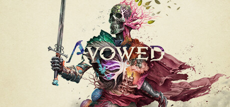
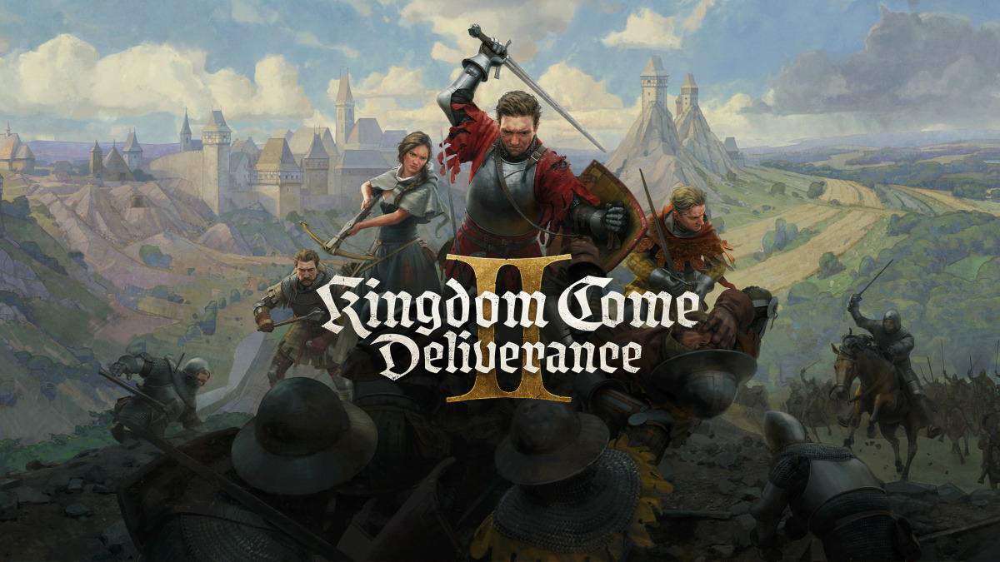

Explore as Terras Vivas em 'Avowed', o novo RPG de ação em primeira pessoa da Obsidian Entertainment. Como emissário de Aedyr, você investigará uma praga misteriosa em uma ilha repleta de perigos e segredos. Combine espadas, feitiços e armas de fogo em combates dinâmicos, enquanto molda seu destino em um mundo vibrante e cheio de escolhas impactantes.
Saiba mais

Embarque em uma jornada épica com Kingdom Come: Deliverance II, a aguardada sequência do aclamado RPG medieval. Assuma o papel de Henry, um jovem ferreiro transformado em guerreiro, e explore a Boêmia do século XV, um mundo aberto rico em detalhes históricos e narrativas envolventes. Com combates aprimorados, mecânicas de jogo avançadas e um ambiente meticulosamente recriado, suas escolhas moldarão o destino de Henry e influenciarão o curso da história.
Saiba mais

Reviva o verão de 1995 com Lost Records: Bloom & Rage, a nova aventura narrativa dos criadores de Life is Strange. Assuma o papel de Swann e explore Velvet Cove, uma cidade pitoresca de Michigan, onde você e suas amigas formam uma banda punk e enfrentam eventos que mudarão suas vidas para sempre. Com uma narrativa envolvente que alterna entre 1995 e 2022, suas escolhas influenciarão os laços de amizade e revelarão segredos há muito enterrados.
Saiba mais

Monster Hunter Wilds é o mais recente título da renomada franquia de RPG de ação da Capcom, lançado em 28 de fevereiro de 2025 para PlayStation 5, Xbox Series X|S e PC. Ambientado nas misteriosas "Terras Proibidas", o jogo desafia os caçadores a enfrentar monstros colossais em um ecossistema dinâmico e realista, onde as criaturas interagem de maneira autêntica e o ambiente pode mudar drasticamente, exigindo estratégias adaptativas. Com um mundo aberto mais vasto e contínuo, os jogadores podem explorar livremente e utilizar montarias que os guiam automaticamente aos seus objetivos, tornando a exploração mais acessível.
Saiba mais